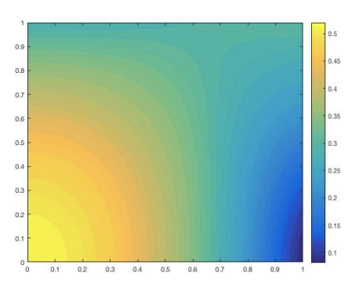

To complete my undergraduate thesis I worked with Dr. Chris McMahan, studying support vector machines. [Paper]
 I worked under Dr. Hyesuk Lee studying numerical methods for fluids. We developed code for modeling the flow of both Newtonian and non-Newtonian fluids under initial boundary conditions. [Publication]
I am a PhD candidate at the University of Maryland, with a research focus on computer vision and machine learning. I obtained my undergraduate degree in applied and computational mathematics from Clemson University.
I graduate in 2019 from